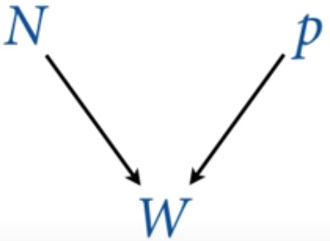

2 - Engenharia de Golems¶
Aula - Statistical Rethinking Winter 2019 Lecture 02
Esse capítulo terá dois objetivos principais:
Construir a intuição de como a atualização funciona, ou seja, como os Golems
aprendem com a experiência.Apresentar uma intuição sobre
como construir esses modelos.
Como iremos usar a probabilidade para fazer um típico modelo estatístico?
Design o modelo: Usando uma base científica e procurando de onde os dados nascem.
Condicionar aos dados: Atualização dos modelos com os dados. Na atualização bayesiana temos apenas
um modo de fazer isso, pois há apenasum tipo de estimador bayesiano.Avaliar como está o modelo: Temos que ser críticos com o nosso modelo, por causa da distinção entre o pequeno
mundo de Colomboe oMundo Real.
Exemplo: Como é feito o processo da criação dos dados?
No curso, o prof. Richard lançou um Globo Terrestre para os alunos. Cada aluno que segurou o globo deveria observar, em sua mão direita, se seu dedo indicador estava sobre algum dos oceanos (representado como \(W\), water) ou sobre a terra (\(L\), land), e registrar esses dados.
Esse é o processo de como os dados estão nascendo!
Suponha que a partir dos lançamentos, nós obtemos a sequência:
O que iremos fazer aqui é estimar a proporção da superfície da Terra que contém água.
{kind=link}
Pare pensar antes de continuar:
Qual é o número de vezes que precisamos jogar o globo, para obter uma certa precisão da estimativa da proporção de água na superfície do planeta?
import numpy as np
import matplotlib.pyplot as plt
from scipy import stats
# Alterando a cor de fundo, para ficar mais elegante.
plt.rcParams['axes.facecolor'] = 'lightgray'
# Design do Modelo
amostras = ['W', 'L', 'W', 'W', 'W', 'L', 'W', 'L'] # Amostra a partir dos lançamentos do globo.
amostras = [1 if amostra == 'W' else 0 for amostra in amostras] # Transformando os dados em números. [1 = W; 0 = L]
Quando o globo foi lançado, a probabilidade do dedo indicador “cair na água”, em qualquer um dos lançamentos, deveria ser proporcional a proporção de água que tem na superfície do planeta. Isso é como jogar uma moeda para sortear cara ou coroa. Mas uma moeda com muitos lados. O ambiente é determinístico, porém caótico para nós. Assim, pequenas diferenças nas condições iniciais, geram resultados essencialmente aleatórios.
Para nós, na escala em que vivemos, o ambiente é determinístico. Mas é um sistema caótico e, portanto, aleatório. Pois não temos a capacidade de compreender o sistema todo e, por isso, somos ignorantes a seu respeito.
O simples lançamento de moedas, para nós, é considerado um bom sistema de aleatorização. Não podemos medir a velocidade inicial e também a posição do giro bem o suficiente para prever como cairá a moeda, essa é a única razão!
Então dizemos que há um número aleatório que gerado, mas que a proporção dele deve ter uma probabilidade \(p\) da superfície da Terra ser coberta por água.
Onde \(p\) é a proporção de água que cobre a superfície da Terra. Por isso não importa a ordem dos lançamentos, já que a probabilidade se mantém a mesma durante todo o processo de amostragem.
Essa é uma suposição, precisamos demonstrar e sermos críticos com relação a isso. Em capítulos futuros iremos aprender como fazer um cálculo para inspecionar essa suposição.
Esse é um dos exemplos mais simples que podemos iniciar a nossa apresentação de como construir um modelo bayesiano.
Em comparação com o exemplo anterior, a bolsa que contém quarto bolinhas coloridas, esse exemplo pode ser imaginado também como uma bolsa (ou seja, o planeta é uma bolsa) e que contém a quantidade infinitas bolinhas (ou seja, todo o par de *latitude* e *longitute* é representando como uma bolinha dentro da bolsa). E, assim como na bolsa, o planeta tem dois tipos de bolinhas coloridas: bolas \(Azuis\) e bolas \(Brancas\), ou melhor, Água (W) e Terra (L),
Condicionando o modelo aos dados¶
Nessa parte, iremos passar por três processos:
A atualização bayesiana define o processo de aprendizagem ótima no pequeno mundo, convertendo assim a priori em posteriori.
Vamos dar ao Golem uma informação sobre o estado, antes dele ver os dados: assim teremos uma crença inicial em cada possível valor de \(p\), proporção de água na superfície da Terra, que deve estar entre \(0\) e \(1\).
Condicionar os dados da amostra para atualizarmos o estado da informação: uma nova credibilidade em cada valor de \(p\), condicionado aos dados.
Basicamente iremos atualizar a informação excluindo todas as possibilidades que são impossíveis de acontecer dado os dados amostrais e, depois, contar todas as possibilidades.
Assim como no exemplo da bolsa, temos que atribuir as nossas hipóteses para conseguirmos avaliar quais delas são as mais plausíveis.
Para entermos melhor, vamos pensar em algumas hipóteses que são mais razoáveis:
Podemos fazer as contagens na mão para todas as \(5\) hipóteses propostas, assim como nós fizemos no exemplo das bolinhas na bolsa. Agora, pare um pouco, e realmente tire um tempo para refletir sobre o que estamos fazendo até agora.
Warning
Sério! Não vá adiante sem compreender qual é a semelhança entre os dois exemplos!
Uma das perguntas que pode (e deveria ter surgido na sua mente) é a seguinte:
Por que foram escolhidas essas cinco hipóteses?
Poderiamos ter escolhido \(p = 0.65\) ou \(p = 0.67\) ou ainda \(p = 0.6211\) ?
Sim, poderiamos! Agora que entendemos o exemplo com as \(5\) hipóteses, podemos colocar outras hipóteses?
Quais outras devemos colocar?
Iremos colocar todas computacionamente, todos os números que estão entre \(0\) e \(1\).
Segue abaixo um gráfico das nossas crenças iniciais, da proporção de água na superfície da terra, para cada uma das hipóteses.
# A primeira hipóteses sobre a proporção de água sobre a superfície da Terra.
p_s = np.arange(0, 1 + 0.01, 0.01) # O valor 0.01 é um ajuste para o vetor de p_s = [0, 1]
# Construindo uma Priori.
priori = stats.uniform.pdf(p_s, loc=0, scale=1) # uniforme(0, 1)
# Plotando à priori, isto é, nossa crença inicial sobre a proporção de água na superfície da Terra.
plt.figure(figsize=(15, 7))
plt.plot(p_s, priori, ls='--', color='blue') # Plot da priori
plt.title("Priori, $p$")
plt.xlabel('$p$, Proporção de Água ($W$)')
plt.ylabel('plausibilidade')
plt.grid(ls='--', color="lightgray", axis="x")
plt.show()
Antes de lançarmos o globo para obtermos nossas amostras, iremos inserir no modelo nossa informação à priori sobre cada uma das hipóteses (\(p\)) que já discutimos anteriormente.
À priori iremos considerar que todos os valores são igualmente plausíveis para todos os possíveis valores de \(p\). Isto é, a linha tracejada no gráfico acima, nos indica que todos os valores entre \(0\) e \(1\) tem a mesma plausibilidade de ocorrer.
Note
Podemos também imaginar que o nosso modelo servirá para qualquer um dos planetas do Universo, não apenas para o planeta Terra.
Condições para esse Golem funcionar:
A ordem dos dados é
irrelevante, pois o Golem assume que a ordem é irrelevante, assim podemos colocar os dados:Todos de uma só vez.
Cada um por vez.
Em ordem embaralhada, em qualquer quantidade, nos darão a mesma posteriori como resultados final.
Assim teremos também que:
Toda a
posterioriserá apriori para próxima observação.Cada priori é a posteriori de alguma outra inferência.
O
efeito do tamanho da amostraestá automaticamente incorporado na posteriori.
Criticando o modelo¶
Agora temos que sair do pequeno mundo e fazer as inferências no mundo real. Devemos, com isso, sermos críticos com as características do modelo e dos dados. O pequeno mundo não é igual ao mundo real, portanto haverá divergências e devemos estar ciente e atentos para entender e reavaliar o modelo e os dados. Como por exemplo:
Temos que observar como é feita a coleta dos dados e
se pode existir algum viés nesse processo: como pessoas daltonicas ver cores diferentes no globo; se algum país tem a cor azul;
Inferência bayesiana: é a resposta lógica para a problema que estamos modelando:
O quão plausível é cada proporção de água, dado os dados?
O Golem deve ser supervisionado verificando questões tais como:
Golem apresenta mal funcionamento?
As respostas do Golem fazem sentido para o estudo em questão?
A questão que está sendo proposta faz sentido?
Checar se as mudanças nas suposições do modelo alteram a sensibilidade do mesmo?
Construindo o framework de causalidade¶
{kind=link}
Fonte: Assista no curso - Statistical Rethinking Course
Existe uma relação causal na estrutura na qual os dados são coletados, \(W\) depende apenas de \(N\) e de \(p\). Mas o \(N\), que significa a quantidade de amostras que coletamos, é independente tanto da proporção de água (\(p\)) quanto do número de amostras de água que foram coletadas (\(W\)).
Entretanto, temos que \(N\) e \(W\) são variáveis que observamos, e \(p\) a variável não-observada e que será inferida através das outras duas variáveis observadas pelo modelo.
Com essa mesma estrutura podemos, e também faremos mais adiante, a inferência sobre a quantidade de vezes que o globo foi lançado (\(N\)). Esse tipo de abordagem também é chamada modelo de captura-recaptura, estudado em principalmente em ecologia e em epidemiologia.
{kind=link}
Mais informações sobre acesse:
Definição de W:¶
É o número relativo (proporcionais) de maneiras na quais podemos ver \(W\), dado \(N\) e \(p\).
Objetivo: Uma função matemática que atribui um
número relativode maneiras pelas quais veremos o valor específico de W, sem que precisarmos de construir todas as infinitas contagens relativas manualmente.Resposta: Distribuição de probabilidade.
Para começar, vamos supor que coletamos 3 amostras:
Qual é o número relativo (ou seja, proporcional) de maneiras de vermos essa sequência de amostras, dado algum valor de \(p\).
Não sabemos qual é o valor de \(p\), mas iremos atribuir qualquer valor para o \(p\) que esteja entre \(0\) e \(1\).
Assim, temos uma probabilidade \(p\) de obter o primeiro valor igual a \(W\) e \((1-p)\) de obter \(L\).
Multiplicaremos todas as proporções, pois os dados são independentes e mutualmente excludentes, assim pela teoria temos que as probabilidades são multiplicadas pela regra do produto.
Warning
Aqui será necessário entender o conceito de contagens!
E por que multiplicamos? Multiplicamos pois é a maneira mais rápida de contar todas as possibilidades pela bifurcação que o dados podem fazer. Não é nada de mais, é apenas um modo mais rápido e eficiênte de contar todas as possibilidades:
Por exemplo:
Assim, teremos:
Perceber também que nossa amostra poderá vir em duas outras sequências diferentes, que não mudará o resultado.
Com isso, precisamos também contar todas as ordens possíveis de coletarmos uma amostra com dois \(W\) e uma \(L\).
Então, nesse caso particular, a contagem relativa de maneiras de se obter essa amostra é:
Distribuição de W (Verossimilhança)¶
Com essa fórmula, se extrapolarmos a para uma amostra de qualquer comprimento (\(N\)), chegaremos a conhecida Distribuição Binomial. E sua forma geral é descrita pela fórmula abaixo:
A contagem relativa dos \(W\) é distribuída binomialmente, e com probabilidade \(p\) iremos sortear \(W\) de um total de \(N\) amostras.
# Python Code - 2.2
# pmf
# Probability Mass Function = Função de massa de probabilidade
# Distribuição Binomial
W_6_9 = stats.binom.pmf(6, n=9, p=0.5)
print("A probabilidade de obtermos 6 W's em 9 amostras é de {} \n com a probabilidade de 50% de encontrarmos um W em cada amostra.".format(W_6_9))
A probabilidade de obtermos 6 W's em 9 amostras é de 0.16406250000000003
com a probabilidade de 50% de encontrarmos um W em cada amostra.
Probabilidade Priori (\(p\))¶
É o que o nosso golem acredita antes de ‘ver’ os dados.
Nesse caso será a probabilidade à priori uniforme \(0-1\) para todos os \(p\)’s.
\(P\{W\}\) e \(P\{p\}\) define nossa distribuição preditiva à priori.
Preditiva está relacionada com a ação de afirmar antecipadamente o que poderá ocorrer num momento futuro. Deduzido ou entendido a partir de informações, dados ou ações anteriores à finalização.*
# A primeira hipóteses sobre a proporção de água sobre a superfície da Terra.
p_s = np.arange(0, 1 + 0.01, 0.01) # 0.01 é um ajuste para o vetor de p_s = [0, 1]
# Construindo uma Priori.
priori = stats.uniform.pdf(p_s, loc=0, scale=1) # uniforme(0, 1)
# Amostra.
amostras = ['W', 'L', 'W', 'W', 'W', 'L', 'W', 'L']
# Transformando nossa amostra em valores numericos.
amostras_num = [1 if amostra == 'W' else 0 for amostra in amostras]
# Calculando a verosimilhança para todas nossas hipóteses de proporções de água para a primeira amostra.
N = 1 # É a variável que determina o tamanho da amostra que estamos utilizando no momento.
verossimilhanca_1 = stats.binom.pmf(np.sum(amostras_num[0: N]), # A primeira amostra sorteada.
N, # N é o número de amostras que estamos retirando. (Nesse caso, 1)
p=p_s) # É o vetor de probabilidades, ou seja, as são nossas hipóteses!
# Calculando a posteriori.
posteriori = verossimilhanca_1 * priori
# Gerando o gráfico com a priori x primeira amostra
plt.figure(figsize=(15, 7))
plt.plot(p_s, priori / sum(priori), ls='--', color='gray') # Plotando o gráfico da priori - (Cinza pontilhado)
plt.plot(p_s, posteriori / sum(posteriori), color='blue') # Plotando o gráfico da posteriori - (Azul)
plt.title('Priori, $p$')
plt.xlabel('$p$, Proporção de Água ($W$)')
plt.ylabel('Plausibilidade')
plt.grid(ls='--', color="lightgray", axis="x")
plt.show()
# Gerando todas as hipóteses sobre a proporção de água sobre a superfície da Terra
precisao_grid = 100 # Precisão do Grid - Número de hipóteses que estamos testando (Grid Aproximation)
p_s = np.arange(0, 1 + 1/precisao_grid, 1/precisao_grid) # O precisao_grid é um ajuste para o vetor de p_s = [0, 1]
# Construindo uma Priori
priori = stats.uniform.pdf(p_s, loc=0, scale=1) # uniforme(0, 1)
# Todos os elementos de nossas amostra
amostras = ['W', 'L', 'W', 'W', 'W', 'L', 'W', 'L', 'W']
# Transformando nossa amostra em valores numéricos.
amostras_num = [1 if amostra == 'W' else 0 for amostra in amostras]
# (Configurações técnicas para a plotagem dos gráficos).
_lado = int(np.round(np.sqrt(len(amostras))))
fig, ax = plt.subplots(_lado, _lado, figsize=(20, 20)) # Constrói um grade quadrada para alocar os gráficos gerados.
posicao = [[i, j] for i in range(_lado) for j in range(_lado)] # Gera todas as posicões da grade.
# Gerando uma posteriori para cada uma das hipóteses.
for n in range(len(amostras)):
# Calculando a verosimilhança para todas nossas hipóteses de proporções de água para a primeira amostra.
N = n # É a variável que determina o tamanho da amostra que estamos utilizando no momento.
verossimilhanca = stats.binom.pmf(np.sum(amostras_num[0: N]), # Qtd de '1' na amostra.
N, # N é o número de amostras que estamos retirando.
p=p_s) # É o vetor de probabilidades, nossas hipóteses.
posteriori = verossimilhanca * priori # Calculando a posteriori.
ax[posicao[N][0], posicao[N][1]].plot(p_s, priori / sum(priori),
color='blue', ls='--', linewidth=0.5) # Plot da Priori
ax[posicao[N][0], posicao[N][1]].plot(p_s, posteriori / sum(posteriori),
color='blue') # Plot da Posteriori
ax[posicao[N][0], posicao[N][1]].grid(ls='--', color='white', linewidth=0.4) # Insere uma grade com linhas verticais.
ax[posicao[N][0], posicao[N][1]].set_title('Amostra: ' + str(N) + ' - $p$, Proporção de Água ($W$)')
ax[posicao[N][0], posicao[N][1]].set_xlabel('$p$, Proporção de Água ($W$)')
ax[posicao[N][0], posicao[N][1]].set_ylabel('Plausibilidade')
priori = posteriori # Posteriori se torna à priori para a análise seguinte.
fig.suptitle('Priori & Posteriori, $p$')
plt.show()
# Gerando todas as hipóteses sobre a proporção de água sobre a superfície da Terra.
p_s = np.arange(0, 1 + 0.01, 0.01) # 0.01 é um ajuste para o vetor de p_s = [0, 1]
# Construindo uma Priori.
priori = stats.uniform.pdf(p_s, loc=0, scale=1) # uniforme(0, 1)
# Amostra.
amostras = ['W', 'L', 'W', 'W', 'W', 'L', 'W', 'L', 'W']
# Transformando nossa amostra em valores numericos.
amostras_num = [1 if amostra == 'W' else 0 for amostra in amostras]
# (Configurações técnicas para a plotagem dos gráficos).
plt.figure(figsize=(15, 7))
# Gerando uma posteriori para cada uma das hipóteses.
for n in range(len(amostras)):
# Calculando a verosimilhança para todas nossas hipóteses de proporções de água para a primeira amostra.
N = n # É a variável que determina o tamanho da amostra que estamos utilizando no momento.
verossimilhanca = stats.binom.pmf(np.sum(amostras_num[0: N]), # Qtd de '1' na amostra.
N, # N é o número de amostras que estamos retirando.
p=p_s) # É o vetor de probabilidades, nossas hipóteses.
posteriori = verossimilhanca * priori # Calculando a posteriori.
plt.plot(p_s, priori / sum(priori), color='blue', ls='--', linewidth=1/(len(amostras) - n + 1)) # Plot da Priori
priori = posteriori # Posteriori se torna à priori para a análise seguinte.
plt.plot(p_s, posteriori / sum(posteriori), color='blue') # Plot da Posteriori
plt.grid(ls='--', color="lightgray", axis="x") # Insere uma grade com linhas verticais.
plt.title('Evolução das Amostras - $p$, Proporção de Água ($W$)')
plt.xlabel('$p$, Proporção de Água ($W$)')
plt.ylabel('Plausibilidade')
fig.suptitle('Priori & Posteriori, $p$')
plt.show()

Definindo uma linguagem¶
Para melhorar a comunicação, vamos utilizar a seguinte notação matemática:
Dizemos que a variável W é distribuída binomialmente:
Dizemos que a variável p é distribuída uniformemente:
Probabilidade à Posteriori¶
A estimativa bayesiana é sempre uma distribuição sobre os parâmetros, \(P\{ parametros | dados\}\):
O cálculo via o teorema de bayes:
onde (\(\forall p\)) significa para todo os \(p\)’s.
Posteriori, Priori e Verossimilhança¶
Observamos no gráfico abaixo qual o comportamento da posteriori quando escolhemos diferentes prioris para \(p\).
Perceba que o comportamento da posteriori, em vermelho, é afetada pela escolha da priori. Prestar atenção na magnetude do eixo das probabiliades (eixo y).
# Gerando todas as hipóteses sobre a proporção de água sobre a superfície da Terra.
p_s = np.arange(0, 1 + 0.01, 0.01) # 0.01 é um ajuste para o vetor de p_s = [0, 1]
# Amostra.
amostras = ['W', 'L', 'W', 'W', 'W', 'L', 'W', 'L', 'W']
# Verossimilhanças de todas as amostras.
verossimilhanca = stats.binom.pmf(np.sum(amostras_num[0: N]), # Qtd de '1' na amostra.
len(amostras), # N é o número de amostras que estamos retirando.
p=p_s) # É o vetor de probabilidades, nossas hipóteses.
fig, ax = plt.subplots(3, 3, figsize=(20, 20))
# ======== Priori 1 ============
# Definindo uma Priori.
priori = stats.uniform.pdf(p_s, loc=0, scale=1) # uniforme(0, 1)
ax[0, 0].plot(p_s, priori / sum(priori), color='blue') # Plot da Priori
ax[0, 1].plot(p_s, verossimilhanca / sum(verossimilhanca), color='green') # Plot da Verossimilhanca.
posteriori = verossimilhanca * priori # Calculando a posteriori
ax[0, 2].plot(p_s, posteriori / sum(posteriori), color='red') # Plot da Posteriori
ax[0, 0].grid(ls='--', color="lightgray", axis="x") # Insere uma grade com linhas verticais.
ax[0, 1].grid(ls='--', color="lightgray", axis="x") # Insere uma grade com linhas verticais.
ax[0, 2].grid(ls='--', color="lightgray", axis="x") # Insere uma grade com linhas verticais.
ax[0,0].set_title('Priori')
ax[0,1].set_title('x Verossimilhança')
ax[0,2].set_title(' ∝ Posteriori')
ax[0,0].grid(color='white', linewidth='0.3', ls='--')
ax[0,1].grid(color='white', linewidth='0.3', ls='--')
ax[0,2].grid(color='white', linewidth='0.3', ls='--')
# ======== Priori 2 ============
# Definindo uma Priori.
priori = stats.uniform.pdf(p_s, loc=0.5, scale=1) # uniforme(0.5, 1)
ax[1, 0].plot(p_s, priori / sum(priori), color='blue') # Plot da Priori
ax[1, 1].plot(p_s, verossimilhanca / sum(verossimilhanca), color='green') # Plot da Verossimilhanca.
posteriori = verossimilhanca * priori # Calculando a posteriori
ax[1, 2].plot(p_s, posteriori / sum(posteriori), color='red') # Plot da Posteriori
ax[1, 0].grid(ls='--', color="lightgray", axis="x") # Insere uma grade com linhas verticais.
ax[1, 1].grid(ls='--', color="lightgray", axis="x") # Insere uma grade com linhas verticais.
ax[1, 2].grid(ls='--', color="lightgray", axis="x") # Insere uma grade com linhas verticais.
ax[1,0].set_title('Priori')
ax[1,1].set_title('x Verossimilhança')
ax[1,2].set_title(' ∝ Posteriori')
ax[1,0].grid(color='white', linewidth='0.3', ls='--')
ax[1,1].grid(color='white', linewidth='0.3', ls='--')
ax[1,2].grid(color='white', linewidth='0.3', ls='--')
# ======== Priori 3 ============
# Definindo uma Priori.
priori = stats.laplace.pdf(p_s, loc=0.4, scale=0.1) # Laplace(0.4, 0.1)
ax[2, 0].plot(p_s, priori / sum(priori), color='blue') # Plot da Priori
ax[2, 1].plot(p_s, verossimilhanca / sum(verossimilhanca), color='green') # Plot da Verossimilhanca.
posteriori = verossimilhanca * priori # Calculando a posteriori
ax[2, 2].plot(p_s, posteriori / sum(posteriori), color='red') # Plot da Posteriori
ax[2, 0].grid(ls='--', color="lightgray", axis="x") # Insere uma grade com linhas verticais.
ax[2, 1].grid(ls='--', color="lightgray", axis="x") # Insere uma grade com linhas verticais.
ax[2, 2].grid(ls='--', color="lightgray", axis="x") # Insere uma grade com linhas verticais.
ax[2,0].set_title('Priori')
ax[2,1].set_title('x Verossimilhança')
ax[2,2].set_title(' ∝ Posteriori')
ax[2,0].grid(color='white', linewidth='0.3', ls='--')
ax[2,1].grid(color='white', linewidth='0.3', ls='--')
ax[2,2].grid(color='white', linewidth='0.3', ls='--')
fig.suptitle('Priori x Verossimilhança ∝ Posteriori')
plt.show()
Cálculo da Posteriori¶
Não temos escolha a não ser calcular a posteriori, porém podemos calcular de algumas formar diferentes:
Abordagem Analítica (Geralmente impossível - Usando Prioris Conjugadas)
Via grade de aproximação (Custo computacionalmente elevado)
Aproximação Quadrática - Também conhecida com Aproximação de Laplace (É limitada, como foi feita acima!)
Monte Carlo via Markov Chain MCMC (Intenso Computacionamente)
Via Grade de Aproximação (Grid Approximation)¶
A probabilidade á posteriori é o produto normalizado das:
probabilidade dos dados
probabilidade á priori
A grade usa um número finito de pontos ao invés usar o espaço contínuo.
Essa abordagem é muito custosa quando temos multiplos parâmetros.
# Conforme o exemplo anterior, usamos o grid approximation para estimar a nossa posteriori,
# Abaixo, temos as precisões do grid.
#
# Para precisão mais baixa, o gráfico tende a ficar mais 'pixelizado', e se torna mais 'contínuo' quando
# aumentamos a precisão, visualmente, precisões acima de 100 não geram gráficos melhores.
# ========================================
# Teste a diferença entre eles:
# ========================================
# precisao_grid = 3
precisao_grid = 5 # Apenas usado como um exemplo!
# precisao_grid = 10
# precisao_grid = 15
# precisao_grid = 20
# precisao_grid = 50
# precisao_grid = 100
# ========================================
# Gerando todas as hipóteses sobre a proporção de água sobre a superfície da Terra.
p_s = np.arange(0, 1 + 1/precisao_grid, 1/precisao_grid) # precisao_grid é um ajuste para o vetor de p_s = [0, 1]
# Construindo uma Priori.
priori = stats.uniform.pdf(p_s, loc=0, scale=1) # uniforme(0, 1)
# Amostra.
amostras = ['W', 'L', 'W', 'W', 'W', 'L', 'W', 'L', 'W']
# Transformando nossa amostra em valores numericos.
amostras_num = [1 if amostra == 'W' else 0 for amostra in amostras]
# (Configurações técnicas para a plotagem dos gráficos).
_lado = int(np.round(np.sqrt(len(amostras))))
fig, ax = plt.subplots(_lado, _lado, figsize=(20, 20)) # Constrói um grade quadrada para alocar os gráficos gerados.
posicao = [[i, j] for i in range(_lado) for j in range(_lado)] # Gera todas as posicões da grade.
# Gerando uma posteriori para cada uma das hipóteses.
for n in range(len(amostras)):
# Calculando a verosimilhança para todas nossas hipóteses de proporções de água para a primeira amostra.
N = n # É a variável que determina o tamanho da amostra que estamos utilizando no momento.
verossimilhanca = stats.binom.pmf(np.sum(amostras_num[0: N]), # Qtd de '1' na amostra.
N, # N é o número de amostras que estamos retirando.
p=p_s) # É o vetor de probabilidades, nossas hipóteses.
posteriori = verossimilhanca * priori # Calculando a posteriori.
ax[posicao[N][0], posicao[N][1]].plot(p_s, priori / sum(priori),
color='blue', ls='--', linewidth=0.5) # Plot da Priori
ax[posicao[N][0], posicao[N][1]].plot(p_s, posteriori / sum(posteriori),
color='blue') # Plot da Posteriori
ax[posicao[N][0], posicao[N][1]].grid(ls='--', color="lightgray", axis="x") # Insere uma grade com linhas verticais.
ax[posicao[N][0], posicao[N][1]].set_title('Amostra: ' + str(N) + ' - $p$, Proporção de Água ($W$)')
ax[posicao[N][0], posicao[N][1]].set_xlabel('$p$, Proporção de Água ($W$)')
ax[posicao[N][0], posicao[N][1]].set_ylabel('Plausibilidade')
ax[posicao[N][0], posicao[N][1]].grid(color='white', linewidth='0.3', ls='--')
priori = posteriori # Posteriori se torna à priori para a análise seguinte.
fig.suptitle('Grid Approximation usando a precisão de ' + str(precisao_grid) + 'pontos')
plt.show()
Amostras a partir da Posteriori¶
Calcule ou aproxime a posteriori
Faça uma amostragem com reposição da posteriori
Calcular coisas com essa amostra
precisao_grid = 300 # Para melhorar o efeito do scatter plot
# Gerando todas as hipóteses sobre a proporção de água sobre a superfície da Terra.
p_s = np.arange(0, 1 + 1/precisao_grid, 1/precisao_grid) # precisao_grid é um ajuste para o vetor de p_s = [0, 1]
# Construindo uma Priori.
priori = stats.uniform.pdf(p_s, loc=0, scale=1) # uniforme(0, 1)
# Amostra.
amostras = ['W', 'L', 'W', 'W', 'W', 'L', 'W', 'L', 'W']
# Transformando nossa amostra em valores numericos.
amostras_num = [1 if amostra == 'W' else 0 for amostra in amostras]
verossimilhanca = stats.binom.pmf(np.sum(amostras_num), N, p=p_s)
posteriori = verossimilhanca * priori # Calculando a posteriori.
posteriori = posteriori / sum(posteriori) # Normalizando a posteriori
# Posteriori
plt.figure(figsize=(17, 6))
posteriori = posteriori / sum(posteriori) # Normalizando a Posteriori
plt.plot(p_s, posteriori, color='blue') # Plot da Posteriori
plt.grid(axis='x', ls='--', color='white')
plt.title('Posteriori')
plt.xlabel('Proporção de Água na superfície da Terra \n (Nossas Hipóteses, $p_s$)')
plt.ylabel('Densidade')
plt.show()
# Amostragem da posteriori
plt.figure(figsize=(17, 6))
amostra_posteriori = np.random.choice(p_s, size=5000, replace=True, p=posteriori)
plt.scatter(amostra_posteriori, range(len(amostra_posteriori)), color='blue', s=1) # Plot da Amostra Posteriori
plt.grid(axis='x', ls='--', color='white')
plt.xlim(0, 1)
plt.title('Amostra a partir da Posteriori (acima)')
plt.ylabel('Quantidade de Amostras')
plt.xlabel('Proporção de Água na superfície da Terra \n (Nossas Hipóteses, $p_s$)')
plt.show()
Calculando coisas com a nossa amostra da Posteriori¶
Geralmente não usamos a distribuição à Posteriori propriamente, mas sim uma amostragem de sua distribuição. Assim podemos manipular e entender algumas informações de modo mais simples. Essa estratégia computacional será usada para praticamente todas as nossas análises como estatísticos bayesianos.
Com a amostra, temos total controle computacional de calcular e entender não só os resultados, mas também manipularmos a engrenagens internas do Golem.
Isso é um dos pontos principais que tornam a abordagem bayesiana superior aos métodos de machine learning, quando é necessário entender os motivos do resultado e não apenas saber um valor específico.
Note
O processo a seguir de manipulação é uma das coisas que torna a abordagem bayesiana um dos melhores métodos para análise de dados. Podemos obter o conhecimento dos parâmetros!
Abaixo listamos algumas informações que queremos saber sobre a nossa análise:
Quanto de probabilidade à posteriori está abaixo, acima ou entre valores específicos do parâmetro?
Qual o valor do parâmetro que contém 50%, 80% ou 95% da probabilidade posteriori? Intervalos de “Confiança”?
Qual o valores dos parâmetros que maximizam a probabilidade à posteriori? Minimiza a perda à posteriori? Estimativa do pontos
Nós que decidimos qual usar! Não há uma regra infantil para usarmos sempre \(95\%\) ou \(99\%\) de probabilidade. Essa escolha depende do grau de precisão que se pretende trabalhar.
Existem, em estatística, basicamente dois tipos de intervalos: Intervalo de Percentil e HPDI (Highest posterior density intervals - Ou seja, o maior intervalo da densidade posteriori)
Intervalos de Percentil: São as áreas de cada região (indicados para serem usados em distribuições simétricas)
HPDI: É o intervalo mais estreito possível que contém a massa de probabilidade.
O que precisamos saber é que o intervalo é apenas um resumo, eles comprimem a informação, mas o que geralmente importa é o formato da posteriori, não há nada nos limites que geram o intervalos que tenha propriedades mágicas.
precisao_grid = 300 # Para melhorar o efeito do scatter plot
# Gerando todas as hipóteses sobre a proporção de água sobre a superfície da Terra.
p_s = np.arange(0, 1 + 1/precisao_grid, 1/precisao_grid) # precisao_grid é um ajuste para o vetor de p_s = [0, 1]
# Construindo uma Priori.
priori = stats.uniform.pdf(p_s, loc=0, scale=1) # uniforme(0, 1)
# Amostra.
amostras = ['W', 'L', 'W', 'W', 'W', 'L', 'W', 'L', 'W']
# Transformando nossa amostra em valores numericos.
amostras_num = [1 if amostra == 'W' else 0 for amostra in amostras]
N = len(amostras) # É a variável que determina o tamanho da amostra que estamos utilizando no momento.
verossimilhanca = stats.binom.pmf(np.sum(amostras_num), N, p=p_s)
posteriori = verossimilhanca * priori # Calculando a posteriori.
posteriori = posteriori / sum(posteriori) # Normalizando a posteriori
def probability_posteriori(hipoteses, posteriori, param_sup, param_inf=False, qtd_amostra=1000, plot=True, show_text=False):
"""Função que retorna a quantidade de pontos proporcionais (p) dentro um range"""
# Calculando o tamanho da amostra da posteriori
amostra = np.random.choice(p_s, size=qtd_amostra, replace=True, p=posteriori)
# Quantidade de pontos da amostra da posteriori que são maiores do que o parâmetro_1
prob = amostra <= param_sup
# Se o parâmetro inferiori foi passado.
if param_inf and param_inf < param_sup:
prob_param_inf = amostra >= param_inf
prob = prob * prob_param_inf # Juntando ambas contagens do param_1 e do param_2
# Configurações do plot
if plot:
hipoteses_filtrado_superior = hipoteses <= param_sup # Todas as hipóteses que são menores que param_sup
# Se o parâmetro inferiori foi passado.
if param_inf:
hipoteses_filtrado_inferior = hipoteses >= param_inf
posteriori_filtrada = posteriori * hipoteses_filtrado_superior * hipoteses_filtrado_inferior
texto = ('Probabilidade da proporção de água (p) na superfície da Terra estar \n entre ' + str(param_inf) + ' e ' + str(param_sup) + ' é igual à ' + str(round(np.sum(prob) / len(amostra) * 100)) + '%, dado a amostra.')
else:
posteriori_filtrada = posteriori * hipoteses_filtrado_superior
texto = ('Probabilidade da proporção de água (p) na superfície da Terra estar \n entre 0 e ' + str(param_sup) + ' é igual à ' + str(round(np.sum(prob) / len(amostra) * 100)) + '%, dado a amostra.')
plt.figure(figsize=(17, 9))
plt.plot(hipoteses, posteriori) # Plot posteriori
plt.fill_between(hipoteses, 0, posteriori_filtrada, alpha=0.5)
plt.title('Probabilidade das hipóteses da superfície da Terra estar coberta por água')
plt.xlabel('Hipóteses, $p_s$')
plt.ylabel('Posteriori')
plt.grid(axis='x', ls='--', color='white')
plt.show()
if show_text:
print(texto)
else:
return np.sum(prob) / len(amostra)
# Probabilidade da proporção da superfície de Terra estar entre parâmtros abaixo:
# =======================================================
# Configure os p_s superiores e inferiores
# -------------------------------------------------------
parametro_p_inferior = 0.5 # [0, 1] or False
parametro_p_superior = 0.7 # [0, 1]
# =======================================================
# Chamando a função probability_posteriori com plot=True
probability_posteriori(p_s, posteriori, param_inf=parametro_p_inferior, param_sup=parametro_p_superior, show_text=True)
Probabilidade da proporção de água (p) na superfície da Terra estar
entre 0.5 e 0.7 é igual à 48%, dado a amostra.
Nós normalmente não usamos estimativas pontuais para tomar decisões como outras escolas estatísticas tendem a pensar. Se assim fosse, era como se tivéssemos colocando toda a certeza num só ponto (\(\theta = 0,63\), por exemplo) ou, pelo menos, escolhendo o valor que maximiza a probabilidade (\(\theta = 0,63\), por exemplo) mas ainda ignorando todos os outros possíveis valores viáveis.
Assim a proposta bayesiana tem as seguintes considerações:
A Posteriori inteira contém toda a informação!
O melhor ponto depende, sempre, da proposta.
A
médiaquase sempre é mais sensível do que amoda.
Falando um pouco sobre intervalos¶
Intervalo de Confiança:
Esse é um termo não bayesiano que
nem sempre significa o que diz.
Intervalo de credibilidade:
Não devemos acreditar na credibilidade
a menos que acreditemos nos dados e no modelo.
Checagem da predição do modelo¶
A probabilidade à posteriori nunca é suficiente.
Até os melhores modelos podem fazer predições terríveis.
Nós também devemos sempre checar as suposições do modelo.
Checagem preditiva: Podemos usar amostras da posteriori para analisar as observações da simuladas.
Vamos entender como fazer simulações a partir da posteriori¶
precisao_grid = 300 # Para melhorar o efeito do scatter plot
# Gerando todas as hipóteses sobre a proporção de água sobre a superfície da Terra.
p_s = np.arange(0, 1 + 1/precisao_grid, 1/precisao_grid) # precisao_grid é um ajuste para o vetor de p_s = [0, 1]
# Construindo uma Priori.
priori = stats.uniform.pdf(p_s, loc=0, scale=1) # uniforme(0, 1)
# Amostra.
amostras = ['W', 'L', 'W', 'W', 'W', 'L', 'W', 'L', 'W']
# Transformando nossa amostra em valores numericos.
amostras_num = [1 if amostra == 'W' else 0 for amostra in amostras]
N = len(amostras) # É a variável que determina o tamanho da amostra que estamos utilizando no momento.
verossimilhanca = stats.binom.pmf(np.sum(amostras_num), N, p=p_s)
posteriori = verossimilhanca * priori # Calculando a posteriori.
posteriori = posteriori / sum(posteriori) # Normalizando a posteriori
# Posteriori
plt.figure(figsize=(17, 6))
posteriori = posteriori / sum(posteriori)
plt.plot(p_s, posteriori, color='blue') # Plot da Posteriori
plt.grid(color='white', linewidth='0.2', ls='--')
max_posteriori = max(posteriori) / 1 # Proposta de um tamanho da barra horizontal
# Plotando 3 pontos verticais
plt.vlines(0.3, 0, max_posteriori, color='red', ls='--', lw=3) # Ponto 1
plt.vlines(0.5, 0, max_posteriori, color='orange', ls='--', lw=3) # Ponto 2
plt.vlines(0.9, 0, max_posteriori, color='green', ls='--', lw=3) # Ponto 3
plt.title('Posteriori')
plt.xlabel('Proporção de Água na superfície da Terra \n (Nossas Hipóteses ($p_s$))')
plt.ylabel('Densidade')
plt.show()
Nossas três estimativas pontuais de \(p\) serão colocadas na distribuição binomial e iremos obter a forma da distribuição desse parâmetro, com \(N=9\) elementos sorteados.
Note
Explicação mais matemática abaixo!
fig, (ax1, ax2, ax3) = plt.subplots(1, 3, figsize=(17, 7))
ax1.bar(np.arange(0, 10), stats.binom.pmf(np.arange(0, 10), n=9, p=0.3), color='red')
ax1.set_title("Usando $p=0.3$")
ax1.set_ylabel("Probabilidade")
ax1.set_xlabel("$W$")
ax1.grid(axis='y', ls='--', color='white')
ax1.set_ylim(0, 0.4)
ax2.bar(np.arange(0, 10), stats.binom.pmf(np.arange(0, 10), n=9, p=0.5), color='orange')
ax2.set_title("Usando $p=0.5$")
ax2.set_xlabel("$W$")
ax2.grid(axis='y', ls='--', color='white')
ax2.set_ylim(0, 0.4)
ax2.set_yticklabels([])
ax3.bar(np.arange(0, 10), stats.binom.pmf(np.arange(0, 10), n=9, p=0.9), color='green')
ax3.set_title("Usando $p=0.9$")
ax3.set_xlabel("$W$")
ax3.grid(axis='y', ls='--', color='white')
ax3.set_ylim(0, 0.4)
ax3.set_yticklabels([])
fig.suptitle('Distribuição Binomial \n ($N=9$)')
plt.subplots_adjust(wspace=0, hspace=0)
plt.show()
# Gerando a distribuição preditiva binomial com amostras de p da posteriori
precisao_grid = 300 # Para melhorar o efeito do scatter plot
# Gerando todas as hipóteses sobre a proporção de água sobre a superfície da Terra.
p_s = np.arange(0, 1 + 1/precisao_grid, 1/precisao_grid) # precisao_grid é um ajuste para o vetor de p_s = [0, 1]
# Construindo uma Priori.
priori = stats.uniform.pdf(p_s, loc=0, scale=1) # uniforme(0, 1)
# Amostra.
amostras = ['W', 'L', 'W', 'W', 'W', 'L', 'W', 'L', 'W']
# Transformando nossa amostra em valores numericos.
amostras_num = [1 if amostra == 'W' else 0 for amostra in amostras]
N = len(amostras) # É a variável que determina o tamanho da amostra que estamos utilizando no momento.
verossimilhanca = stats.binom.pmf(np.sum(amostras_num), N, p=p_s)
posteriori = verossimilhanca * priori # Calculando a posteriori.
posteriori = posteriori / sum(posteriori) # Normalizando a posteriori
amostra = []
for i in range(100):
p_amostrado = np.random.choice(p_s, size=1, replace=True, p=posteriori)
amostra_binomial = stats.binom.rvs(n=9, p=p_amostrado, size=100) # 100 amostras para cada p_amostrado
amostra.append(amostra_binomial)
# Plot
plt.figure(figsize=(17,9))
plt.hist(np.ravel(amostra), density=True, rwidth=0.8, bins=10)
plt.grid(axis='y', ls='--', color='white')
plt.xlabel('$w$')
plt.ylabel('Probabilidade')
plt.title('Distribuição de Posteriori Preditiva \n ($Binominal$)')
plt.show()
Resumo¶
Achei interessante fazer um resumo mais matemático para eu conseguir alinhar as minhas ideias, essa parte não está diretamente no conteúdo original dessa aula. Não necessário ler essa parte para continuar.
A distribuição binomial é uma função matemática comum do ponto de vista algébrico. Ela tem como três parâmetros, (\(N, W, p\)), e que retorna a probabilidade de ocorrer esse determinado evento!
Ná anáĺise de dados, quais são as variáveis que normalmente temos?
N = Quantidade de amostra (count no banco de dados?)
W = Quantas vezes que ocorreu o sucesso?
Mas ainda nos falta saber qual o \(p\)? Se tivessêmos o \(p\), poderiamos calcular a probabilidade da binomial!
Mas o \(p\) é justamente o valor que eu quero obter mais conhecimento.
Então podemos definir a verossimilhança da seguinte forma:
Separar todos os \(p\) que forem plausíveis, ou seja, as minhas hipóteses.
Inserir a sua crença como um peso para todos os \(p\)’s separados anteriormente, ou seja, uma distribuição de probabilidades para os \(p\)’s. Essa é à priori.
Calcular para cada \(p\)’, que foi separado no primeiro passo, qual é a probabilidade da binomial usando os \(N, W\) e os \(p\)’s. A escolha do \(p\)’ que tem associada a máxima probabilidade, chamaremos de máxima verossimilhança. Para todos os \(p\)’s temos uma probabilidade associada. Perceba soma da probabilidade de todos os \(p\)’s podem não somar \(1\). Pois elas são, individualmente, apenas a probabilidade da distribuição binonial com o parâmetros \(N, W\) e \(p\).
Chama-se verossimilhança, em linguagem coerente ao atributo daquilo que parece intuitivamente verdadeiro, isto é, o que é atribuído a uma realidade portadora de uma aparência ou de uma probabilidade de verdade, na relação ambígua que se estabelece entre imagem e ideia.
A
verossimilhançaponderada (multiplicado) pela nossa distribuiçãopriori, é aposteriori!
Então o gráfico anterior, com 3 cores, é quando fixo um \(p\) específico e não uso mais o valor obtido da amostra \(W\), mas faço o cálculo da probabilidade de ocorrer cada um dos possíveis valores de \(W\) dado \(p\).
E, por fim, para gerar a distribuição preditiva é necessário fazer a amostragem dos \(p\)’s e com eles gerar da distribuição preditiva amostras. O último gráfico faz isso e gera a probabilidade de, com \(9\) lançamentos (\(n=9\)), qual é a probabilidade de todos os possíveis valores de \(W\).